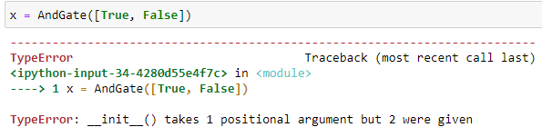

פותח את פוסט גם לשאלות עתידיות, אבל אתחיל עם משהו קצת שולי שממש לא ברור לי,
אני מתכנן לבנות את התרגיל כך שהמחלקה LogicGate תהיה מחלקת אב אבסטרקטית ועליה יתבססו כל מחלקות ההשוואה (and, or וכו’)
מקווה שאני לא חושף את התשובה, אבל בניתי את המחלקה כך, היא מקבלת את המשתנה entries שייצג את הכניסות שלה, ואת היציאה הגדרתי עפ"י פונקציה (ובמחלקת האב שמתי לה pass).
לאחר מכן לכל אחת מהמחלקות אותו init ולכל אחת מהן שיניתי את הפעולה get_exit בהתאם למחלקה.
עכשיו כשניסיתי להריץ מופע של אחת המחלקות אני לא מצליח להבין מה הבעיה שלי:

מבין שמדובר בבעיה של הגדרת משתנה, אבל הוא מוגדר וזה מה שאני לא מצליח להבין, יותר מזה, חזרתי למחברת 2 כדי להשוות לתרגילים אחרים כדוגמא, והן כתובות בדיוק אותו הדבר.
מקווה שהדוגמא הזאת לא חושפת יותר מדי, אבל הנה דוגמא לאחת המחלקות (כולן בנויות אותו הדבר):
class NandGate(LogicGate):
def __init__(self, **kwargs):
super().__init__(**kwargs)
zurikarat
איך בנויה LogicGate?
DrorBiton
האמת שבדיוק באתי לערוך את הפוסט שמצאתי שביצירה של המופע, אם הגדרתי אותו כך:
x = XorGate(entries=[False, False])
זה עבד בלי בעיה, למרות שהחלק הזה של ההשמה עדיין לא ברור לי.
בכל אופן, אני לא בטוח איך להמשיך מכאן לשאר המחלקות, אני חושב אבל שיש לי כיוון:
אם הבנתי נכון, הסדר של המחלקה connector עובד כך:
input_gates היא בעצם רשימה של 2 השערים הראשונים, עפ"י סדר, OrGate תקבל את שני ה- False ו- AndGate תקבל את שני ה- True.
לאחר מכן, התוצאה של שני השערים תיכנס לשער הראשי, Gate, ואז אני אקבל את התוצאה הסופית.
כך בעצם כל 2 משתנים יוצרים מופע של מחלקה.
עוד שאלה שנובעת מכך היא השימוש במחלקות UnaryGates ו- BinaryGates, הבנתי עכשיו שהייתי צריך להשתמש בהן כמחלקות שיורשות מ- LogicGate ושבהתאם שאר המחלקות ירשו מהן, אבל אין לי באמת צורך בהן, האם פשוט ליצור 2 מחלקות ביניים שלא מוסיפות לי שום דבר?
*אני מבין את ההבדל ביניהן, אבל אני לא צריך אותן כדי להתייחס אליו כשאני רוצה לקבל את היציאה של המחלקה.
DrorBiton
אני רוצה לדייק את השאלה כיוון שנתקעתי בשלב הבונוס.
כדי למצוא את הפתרון התבססתי על אינדקסים של הרשימות שאני מקבל, וכשהגעתי לבונוס הבנתי שאני לא בהכרח יכול לעשות את זה כיוון שכל connector יכול להיות שונה.
כשאני מנסה לפענח את הבונוס, את הראשון הבנתי, מוגדר כמו בהתחלה, אבל בשני לא ברור לי מה הכוונה תחת second connector:
input_gates=[first_connector]
אני מצליח להבין שהיא אמורה לקבל את התוצאה של connector 1 + את הקלט הבא בתור (מרשימת הקלטים), אבל לא ברור לי איך אני אמור להוציא ממנה את התוצאה בניסוח הזה? הרי הניסוח שאנחנו כן מכירים שקיים כדי לתת ייצוג למחלקה הוא ע"י שימוש ב __ str __ שמחזיר סטרינג ולא ביטוי בוליאני, אז האם אני אמור לשנות את הבדיקה, ואם לא איך אני גורם למחלקה להחזיר בוליאני ולא סטרינג.
yuval.cagan
איך גרמת למחלקה בסעיף הראשון להחזיר ביטוי בוליאני ולא סטרינגי?
מה ההבדל בין הסעיפים?
לייק 1
efratush
בסעיף הראשון, בבדיקה אתה מחזיר str או bool?
DrorBiton
הבנתי את הכוונה שלכם ואת הבלבול שלי, חזרתי קצת אחורה בניסיון לתקן את שיטת העבודה של האינדקסים בתקווה שזה יפתח לי את הראש לכיוון אחר לפתור את הבונוס,
אני מנסה לבנות פעולה שתחליף את העיבוד עפ"י אינדקסים ושתדע עבור כל שער בקלט לזהות אם הוא בוליאני או אונרי ובהתאם לדעת להוסיף לו קלט 1 או שניים.
החלק שמוזר לי הוא שהצלחתי להריץ את השורה הראשונה ולקבל True אבל בשניה אני מקבל התראה:
@
אני מצליח להבין את המשמעות של ההתראה, אבל מצליח להבין למה היא נובעת בשורה השניה אם בשורה הראשונה היא הצליחה לקרוא למחלקה OrGate ולקבל את התוצאה הנכונה.
עריכה:
סיימתי עכשיו לרוץ שלב שלב ב python tutor ואין לי מושג למה הוא לא מצליח להריץ את השורה השניה.
חזרתי למחברת וניסיתי להריץ כל שורה בנפרד בתא אחר וכולן עבדו, ברגע שהוספתי שורה נוספת הקוד לא רץ ואני לא מצליח להבין למה זה פועל ככה.
ניסיתי גם להעתיק את השורה בין כל אחד: